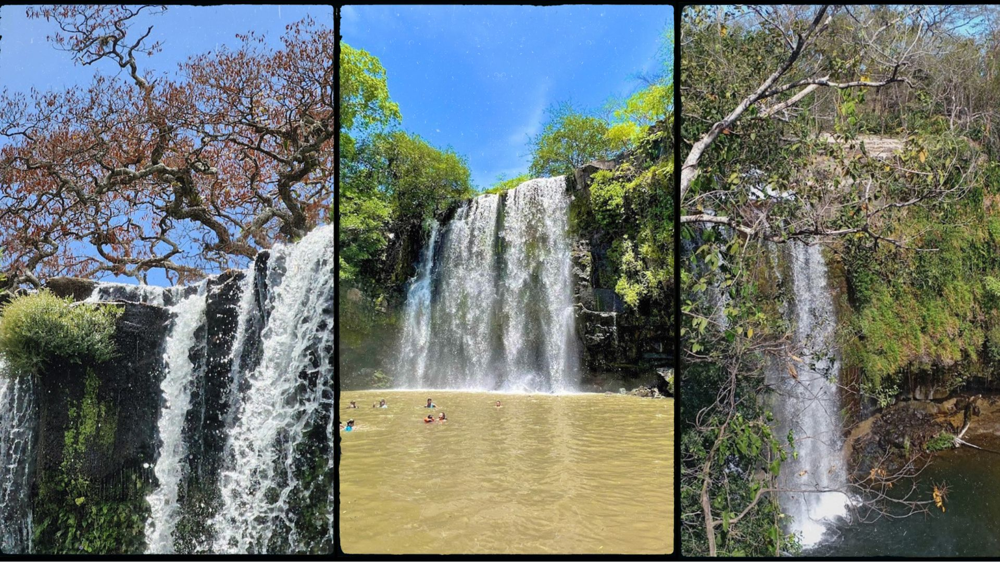
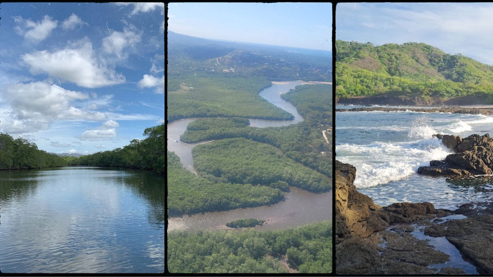

Un itinerario curado para quienes quieren descubrir la zona con más detalle, menos ruido y más conexión con la naturaleza. Aquí no hay una lista exhaustiva por cumplir: está pensado para elegir bien, disfrutar más y salir con un plan que deje espacio para lo inesperado.
CATEGORÍA 01
Playas secretas
Si lo que buscas es escapar de las multitudes y perderte en rincones más tranquilos, aquí te traemos playas secretas que pocos conocen. Son esos lugares donde el mar y la naturaleza se encuentran en su estado más puro, sin nadie que te moleste. Arena dorada, olas suaves y ese sonido relajante que sólo escuchas cuando estás lejos de todo. Son el lugar perfecto para relajarte, recargar energías y sentir que eres parte de algo especial.
Playa Ventanas
Ubicada cerca de Playa Grande, Playa Ventanas es un pequeño paraíso costero que ofrece un ambiente más íntimo y menos concurrido. Es perfecta para quienes disfrutan de un mar más calmado y buscan relajarse con un buen libro o simplemente admirar la belleza natural.
Cómo llegar: Desde Tamarindo, toma un bus a Playa Grande y luego una caminata de 15 minutos te llevará a Ventanas. También puedes llegar en bicicleta.
Entrada: Libre.
Mejor época para ir: De noviembre a abril, cuando el acceso es más fácil y las lluvias no son un impedimento.
Vida silvestre: En la arena, es común ver cangrejos pequeños y aves playeras. Por la noche, con suerte, podrías ver tortugas marinas que se acercan a anidar en la temporada de tortugas.
Danta es una joya de la costa del Pacífico, oculta entre las colinas de Las Catalinas. Su ambiente tranquilo y aguas cristalinas invitan a nadar, relajarse y disfrutar de la naturaleza. Lo mejor de esta playa es que rara vez está llena, lo que la convierte en un refugio perfecto para quienes buscan paz y tranquilidad. Además, cerca de la playa, puedes encontrar senderos para caminatas cortas que ofrecen vistas espectaculares del océano.
Cómo llegar: Desde Tamarindo, puedes tomar un bus hacia Potrero y luego un taxi hasta Las Catalinas, donde una corta caminata te llevará a la playa.
Entrada: No se requiere entrada.
Mejor época para ir: La temporada seca (de diciembre a abril) es ideal, ya que el agua es más clara y el clima es perfecto para actividades al aire libre.
Vida silvestre: Aquí es común ver iguanas y una variedad de aves tropicales como pelícanos y fragatas. En el agua, es posible encontrarse con peces pequeños mientras se hace snorkel.
A solo 20 minutos de Tamarindo, Playa Avellanas es conocida por ser un punto de surf de primer nivel, pero también es un excelente lugar para quienes buscan relajarse bajo las palmeras. Tiene una vibra muy relajada, con pocos turistas y olas lo suficientemente consistentes como para disfrutar tanto si eres principiante como experto en el surf.
Cómo llegar: Puedes tomar un shuttle desde Tamarindo o conducir. El transporte público directo es limitado, pero hay opciones de taxi.
Entrada: No se requiere entrada.
Mejor época para ir: La mejor época para surfear es de marzo a noviembre, aunque en temporada de lluvias algunas partes de la carretera pueden estar en mal estado.
Vida silvestre: Los monos aulladores son los reyes del lugar. También verás iguanas y una diversidad de aves tropicales.
Más conocida como la famosa Roca Bruja, esta playa virgen se encuentra dentro del Parque Nacional Santa Rosa aproximadamente a 2 horas desde Tamarindo. Es uno de los puntos de surf más míticos de todo Costa Rica, ya que la entrada al parque no es sencilla y la ola que ahí se encuentra es una maravilla de la naturaleza.
Cómo llegar: Desde Tamarindo, toma un bus hasta Liberia y un taxi hasta la entrada del parque. El estacionamiento dentro del parque a la playa está a unos 6 km de distancia y este recorrido se puede hacer a pie o en un vehículo 4x4 únicamente. También existen tours que te llevan a la playa mediante un bote saliendo de Playa del Coco.
Entrada: 40 dólares extranjeros, 5 dólares locales para la entrada al parque.
Mejor época para ir: Todo el año.
Vida silvestre: Playa Naranjo y el Parque Nacional Santa Rosa son parte de una de las áreas más importantes para la conservación del jaguar en Costa Rica. Estos grandes felinos han sido avistados en la zona, especialmente en las áreas más remotas del parque, que forman parte de un corredor biológico vital para su movilidad. Los jaguares, aunque difíciles de ver debido a su naturaleza esquiva, utilizan el parque como territorio de caza, aprovechando la abundancia de presas como venados, pecaríes y otros mamíferos.
Famosa por su arena formada por diminutas conchas trituradas, Playa Conchal es el lugar perfecto para un día de descanso y snorkeling. Sus aguas son transparentes y calmadas, ideales para nadar o simplemente flotar mientras disfrutas del paisaje submarino. La playa es amplia, ofreciendo lugares donde puedes sentir que tienes tu propia porción de paraíso.
Cómo llegar: Desde Tamarindo, toma un bus hacia Brasilito y luego una caminata de 15 minutos te llevará a Playa Conchal.
Entrada: No se requiere entrada.
Mejor época para ir: Todo el año es excelente, pero la claridad del agua es mayor entre diciembre y abril.
Vida silvestre: En el agua, verás una gran cantidad de peces tropicales, estrellas de mar y, a veces, tortugas marinas nadando cerca de la costa.
No hay nada como llegar a una cascada después de caminar por senderos verdes y descubrir un paraíso natural esperando solo para ti. Estas cascadas no son las típicas que todos conocen; están un poquito más escondidas y eso las hace únicas. Son el mejor sitio para un buen chapuzón, un momento de paz en medio de la selva y esa sensación de estar en un lugar que pocos tienen la suerte de ver.

Llanos de Cortés
Considerada una de las cascadas más bellas de Costa Rica, Llanos de Cortés ofrece una amplia piscina natural para nadar y refrescarse. Sus cascadas descienden por una pared rocosa y, a menudo, está rodeada de exuberante vegetación, lo que la convierte en un lugar ideal para relajarse o hacer un picnic.
Cómo llegar: Desde Tamarindo, puedes tomar un bus a Bagaces, luego un taxi te llevará a la entrada de la cascada.
Entrada: Se sugiere un donativo de ₡2,000 (~$4) que ayuda a la comunidad local.
Mejor época para ir: Todo el año, aunque es más impresionante después de la temporada de lluvias.
Vida silvestre: En la zona, puedes ver aves como tucanes y mariposas de colores vibrantes. También es un lugar frecuentado por familias de monos aulladores.
Esta cascada es un verdadero tesoro escondido cerca del Volcán Rincón de la Vieja. Llegar a ella implica una caminata aventurera que atraviesa ríos y pequeños senderos rodeados de bosque. La recompensa al final es una impresionante cascada en un entorno natural prácticamente virgen.
Cómo llegar: La manera más conveniente es alquilar un coche o unirte a un tour que salga desde Liberia.
Entrada: Parte del parque, la entrada cuesta alrededor de ₡6,000 (~$12).
Mejor época para ir: Temporada de lluvias (mayo a noviembre), cuando el caudal de la cascada es más abundante.
Vida silvestre: La zona es rica en biodiversidad, donde es común ver tucanes, iguanas y hasta algunos venados de campo.
Para los que aman la naturaleza, Tamarindo y sus alrededores son un sueño hecho realidad. Aquí puedes caminar entre árboles gigantes y descubrir animales increíbles en su hábitat natural, desde monos e iguanas hasta aves exóticas. Esos momentos en los que ves la vida salvaje tan de cerca son como pequeños regalos de la naturaleza. Sal a explorar y descubre todo lo que esta tierra tiene para ofrecerte.

Las Baulas
Si te interesa ver tortugas marinas en su hábitat natural, este parque es una parada obligatoria. Los senderos te llevan a través de los manglares, donde es posible avistar aves tropicales y, si tienes suerte, ver tortugas laúd anidando en la playa durante la temporada de anidación.
Cómo llegar: La manera más conveniente es alquilar un coche o unirte a un tour que salga desde Liberia.
Entrada: ₡1,500 (~$3).
Mejor época para ir: De octubre a febrero, que es la temporada de anidación de las tortugas.
Vida silvestre: Tortugas marinas, cocodrilos en los manglares y una gran diversidad de aves acuáticas.
El Parque Nacional Palo Verde es uno de los destinos más importantes para la observación de vida silvestre en Costa Rica, especialmente para los amantes de las aves. Este parque, ubicado en la provincia de Guanacaste, es famoso por su extensa biodiversidad y su papel clave en la protección de uno de los humedales más importantes de Centroamérica, ubicado en la cuenca del río Tempisque.
El parque abarca una amplia variedad de ecosistemas que incluyen manglares, lagunas, humedales, bosques tropicales secos y estuarios, lo que lo convierte en un refugio vital para muchas especies de fauna y flora. Palo Verde se distingue especialmente por sus humedales estacionales, que son un santuario para aves migratorias.
Cómo llegar: El Parque Nacional Palo Verde está a unos 2.5 horas en auto desde Tamarindo. Si viajas desde la capital, San José, el viaje en automóvil puede tomar alrededor de 4 horas. La mejor forma de llegar es en vehículo privado, preferiblemente 4x4, ya que los caminos cercanos al parque pueden volverse difíciles durante la temporada de lluvias. También es posible contratar tours que parten de Liberia o Bagaces.
Entrada: El costo de la entrada al parque es de alrededor de 12 USD para turistas extranjeros. También es posible realizar tours en bote a través del río Tempisque, lo que brinda una experiencia más cercana a la vida silvestre. Estos tours tienen un costo adicional que varía según el operador.
Mejor época para ir: La mejor época para visitar Palo Verde es durante la temporada seca (diciembre a abril), cuando la concentración de fauna, especialmente aves, es mayor. Durante la temporada de lluvias, algunos senderos y accesos pueden volverse difíciles por el barro.
Vida silvestre: Entre las especies más comunes se encuentran garzas, ibis, espátulas rosadas y el raro jabirú, la cigüeña más grande de América. Además de las aves, es posible avistar cocodrilos americanos, monos aulladores, iguanas, ciervos y una rica variedad de insectos y reptiles.
El Parque Nacional Rincón de la Vieja es uno de los destinos más emblemáticos de Costa Rica, famoso por su biodiversidad y por albergar el majestuoso volcán activo del mismo nombre. Ubicado en la provincia de Guanacaste, cerca de Liberia, este parque ofrece una mezcla única de paisajes volcánicos, bosques tropicales y aguas termales, convirtiéndolo en una visita obligada para los amantes de la naturaleza y la aventura. El parque cubre alrededor de 14,000 hectáreas y ofrece una gran diversidad de ecosistemas, desde bosques secos hasta exuberantes selvas tropicales y áreas volcánicas activas. El volcán Rincón de la Vieja, con una altura de 1,916 metros, es el punto focal del parque, y es responsable de las aguas termales, géiseres, fumarolas y barro burbujeante que se encuentran en la región.
Cómo llegar: Desde Liberia hay buses hasta la entrada del parque.
Entrada: ₡6,000 (~$12).
Mejor época para ir: Todo el año.
Vida silvestre: Pumas, jaguares, monos y una diversidad impresionante de aves.
Debajo de las aguas cristalinas de la costa, se esconde un mundo lleno de vida y colores. El snorkel aquí te permite ver de cerca peces de colores, arrecifes y todo tipo de vida marina. Ya sea que seas un experto o sea tu primera vez, cada inmersión es una aventura que te conecta con la magia del océano y todo lo que tienes para mostrarte. ¡Ven a ver lo que hay bajo la superficie!
Las Catalinas
Las Islas Catalinas son conocidas por ser un excelente lugar para hacer snorkeling, donde se pueden ver tiburones de punta blanca, mantarrayas y una gran variedad de peces tropicales. Estas islas ofrecen una experiencia marina rica, perfecta para quienes buscan sumergirse en las profundidades de la biodiversidad costarricense.
Cómo llegar: Tours en bote desde Playa Flamingo o Potrero.
Entrada: Los tours cuestan alrededor de $50.
Mejor época para ir: Todo el año, aunque la visibilidad es mejor en la temporada seca (diciembre a abril).
Con sus aguas cristalinas y una abundancia de vida marina, Playa Ocotal es un lugar excepcional tanto para buceo como para snorkeling. Aquí puedes ver desde peces tropicales hasta tortugas marinas, y el entorno es ideal para una experiencia relajante y alejada del bullicio.
Cómo llegar: Hay autobuses regulares desde Liberia.
Entrada: Libre.
Mejor época para ir: De diciembre a abril, cuando el agua es más clara.
Vida silvestre: Peces tropicales, tortugas y rayas.
Flamingo es otro destino muy popular para hacer snorkeling, con una rica variedad de fauna marina que incluye peces de arrecife, rayas y, ocasionalmente, tiburones pequeños. Además de su impresionante vida marina, las formaciones rocosas hacen que la experiencia sea visualmente cautivadora.
Cómo llegar: Autobuses desde Tamarindo o Brasilito.
Entrada: Libre.
Mejor época para ir: Diciembre a abril, cuando el agua es más transparente.